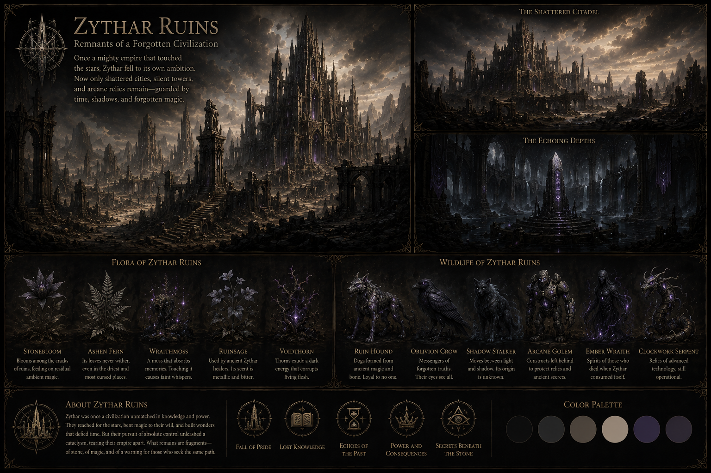
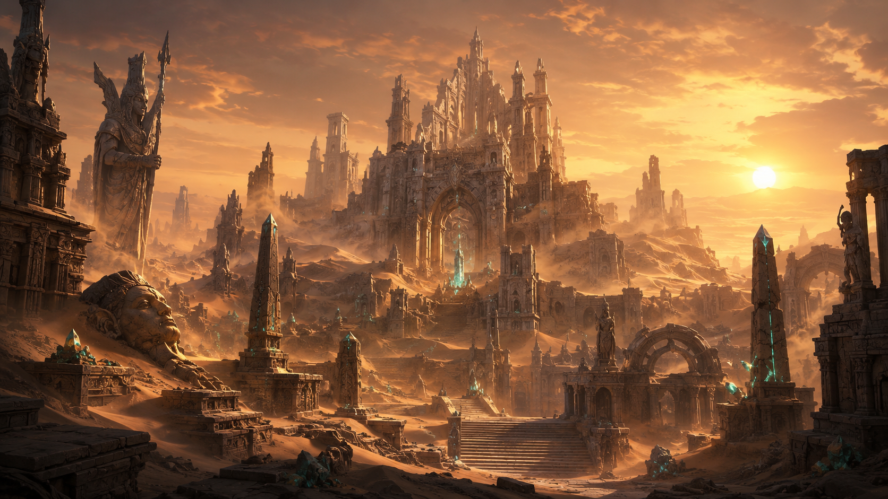
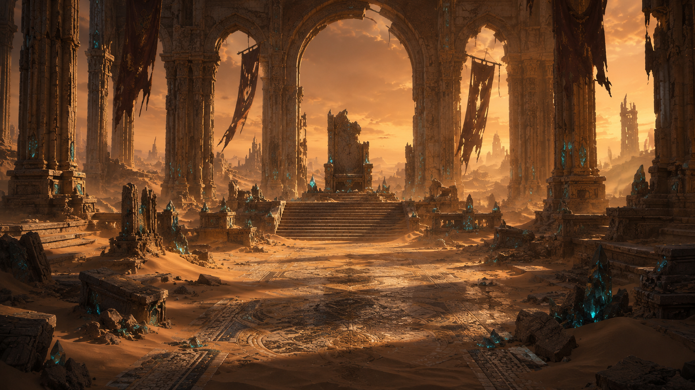
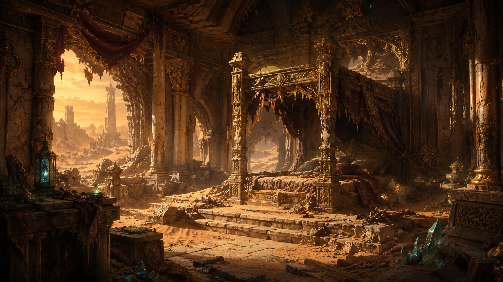
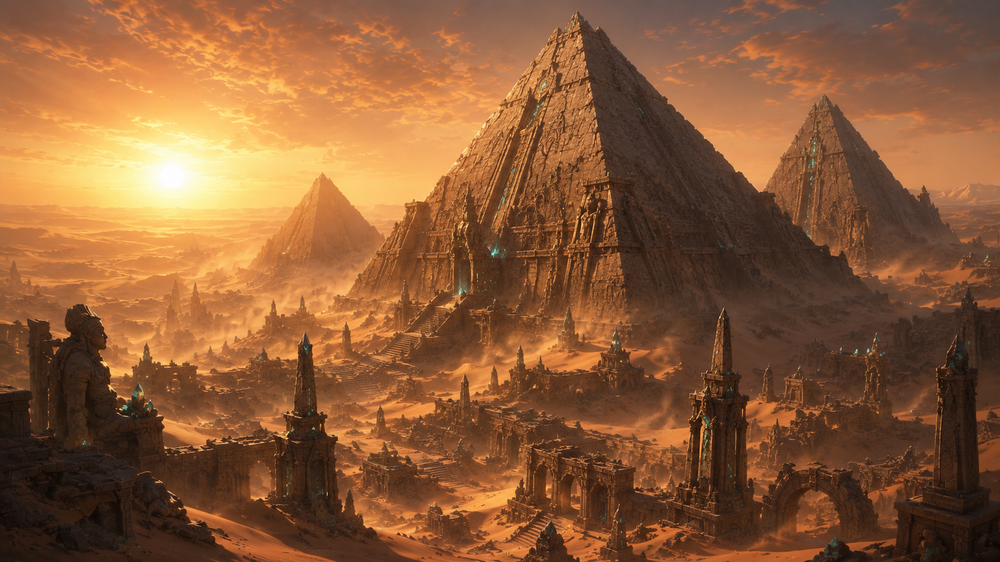
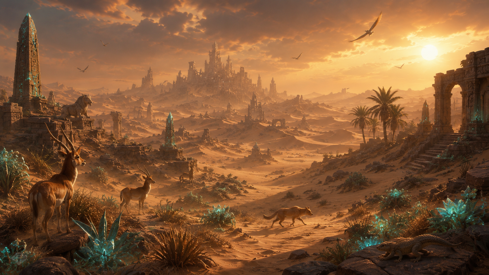
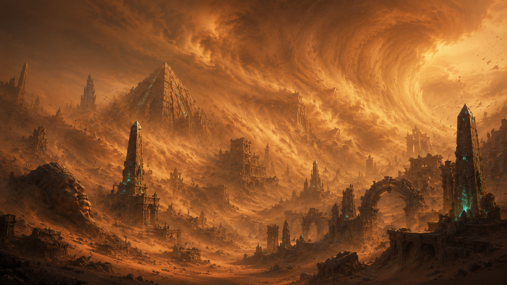
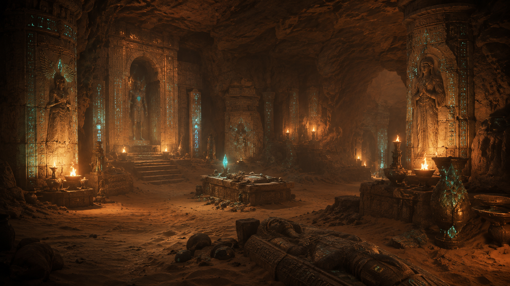
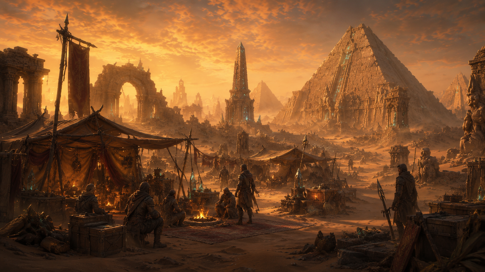
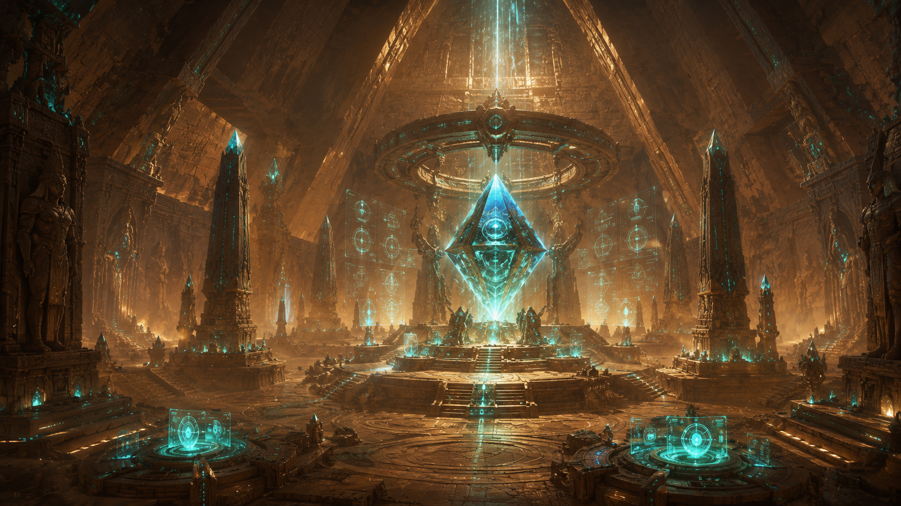

A forgotten desert civilization of shattered temples, buried pyramids and ancient technology, where sandstorms conceal secrets that have remained untouched for centuries.
Discover Zythar RuinsZythar is a civilization that survives among the remains of something far older than itself. Broken temples, enormous pyramids and buried structures stretch across the desert, many still filled with symbols and mechanisms whose original purpose has never been completely understood.
Zythera grew as explorers, scholars and travelers began settling near the most important ruins. Unlike the organized capitals of other nations, much of Zythar feels temporary: excavation camps, markets and mercenary settlements constantly appear and disappear as new discoveries are made beneath the sand.
The Council of Relic Keepers attempts to protect the ruins while Scholars search for knowledge and Mercenaries search for profit. Nomads travel between isolated settlements, and the Relic Guard watches over the most valuable sites. Rune magic, sand magic and ancient technology often exist side by side, making Zythar one of the strangest mixtures of past and present in Eryndor.
The desert itself remains dangerous. Sandstorms can bury entire roads in hours, while snakes, scorpions, insects and other desert creatures hide among the dunes and caves. Ancient chambers beneath the pyramids contain even greater mysteries, including technology far more advanced than anything visible on the surface.

Zythera
The Council of Relic Keepers
Mercenaries, Scholars, Nomads and Ruin Dwellers
Rune, Sand and Ancient Technology
Dry, Hot and Sandstorm-Prone
The Relic Guard








